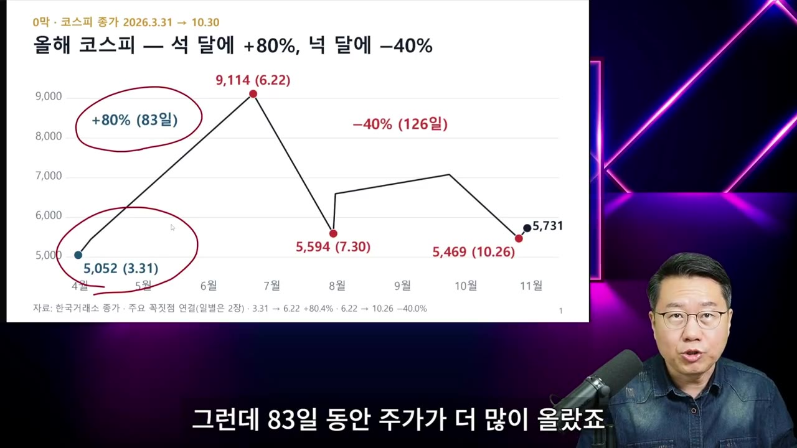
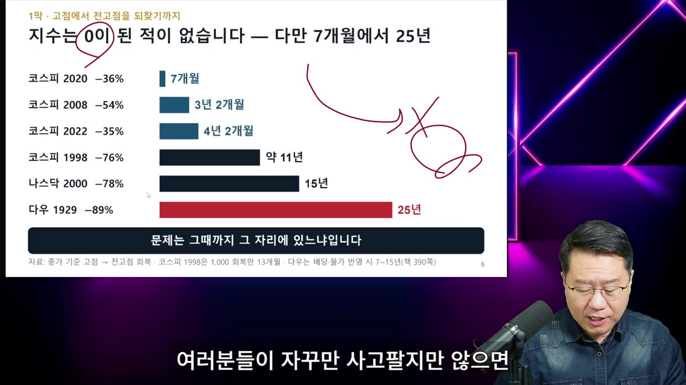
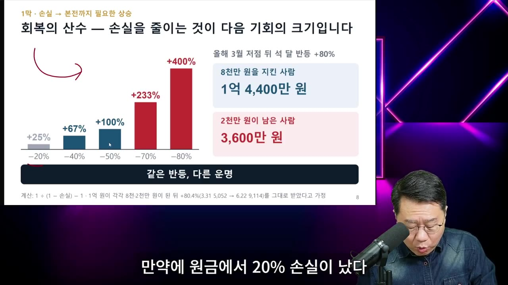
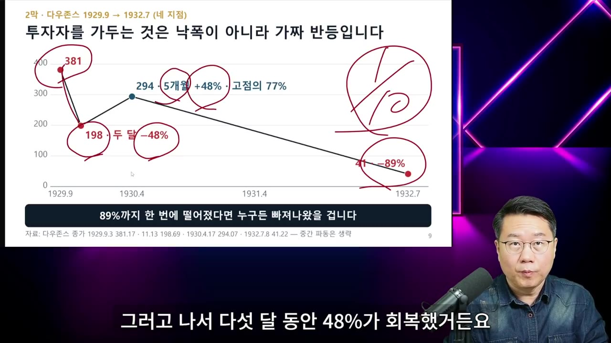

최악의 폭락장에서도 내 돈을 지키는 방법 (박종훈의 지식한방)
▶ 원본 영상 보기한눈에 보기
- 박종훈 씨는 코스피가 83일 만에 80% 올라 9,114까지 갔다가 40일 만에 38% 떨어졌다고 짚고, 앞으로도 변동성이 클 것이라고 봅니다.
- 폭락 때 팔고 반등 때 다시 사는 '뇌동 매매'를 두 번만 해도 1억 원은 5,300만 원이 됩니다. 계속 사고팔면 지수가 38% 빠질 때 계좌는 80% 넘게 줄어들 수 있다고 경고합니다.
- 자산을 잃게 만드는 네 가지 습관으로 빚투(신용거래), 레버리지·곱버스, 한 종목 몰빵, 엇박자 매매를 꼽고, "본전 생각"에 위험한 상품에 손대지 말라고 강조합니다.
- 하루에 가장 크게 오르는 날은 늘 폭락장 한가운데 온다고 말합니다. 그래서 폭등은 따라 사지 말고 "아직 불안한 시장"이라는 신호로 읽으라고 합니다.
- 대책으로 '오디세우스 방법'(귀를 막고 몸을 묶기)과 '닻과 돛' 포트폴리오를 제시합니다. 닻은 현금성 자산·미국 단기국채, 돛은 태풍에도 뒤집히지 않을 만큼만 편 위험자산입니다.
이런 분께 도움이 됩니다
- 최근 급락장에서 손절과 재매수를 되풀이하며 계좌가 줄어든 개인 투자자
- 손실을 만회하려고 레버리지나 곱버스를 생각하고 있는 분
- 폭락장에서 현금과 주식 비중을 어떻게 나눌지 원칙이 필요한 분
핵심 내용
올해 코스피 급등락과 앞으로의 전망 (영상 속 주장)
- 박종훈 씨는 3월 31일 수준까지의 상승은 '우리 경제 실력'만큼이었지만, 그 뒤의 급등은 국민연금과 개별 종목 레버리지가 끌어올린 것이라고 봅니다. (0:23)
- 억지로 끌어올린 주가는 반드시 대가를 치른다고 말합니다. "경제에 공짜 점심은 없다."
- 앞으로도 변동성이 계속될 것이므로 매매 횟수를 줄이고 포트폴리오를 지키라고 합니다.
🔁 2026년 코스피 흐름 (영상 설명 기준)
- 실력만큼 상승
- 83일간 급등
- 40일간 급락
- 데드캣 바운스
- 다시 하락
- 1실력만큼 상승
3월 31일까지는 경제 실력에 맞는 상승이었다고 평가 (0:23)
- 283일간 급등
국민연금과 레버리지 덕에 80% 올라 9,114까지 상승

5,052(3.31)→9,114(6.22) +80%(83일), 이후 –40% · ▶ 0:38 - 340일간 급락
5,594까지 38% 하락. 금융위기가 아니면 드문 속도라고 설명
- 4데드캣 바운스
하락폭의 절반 가까이를 되찾는 반등을 예고했고, 실제로 7,100 부근까지 올랐다고 말함 (1:34)
- 예상 범위의 숫자는 자막상 불분명("7,에서 한 7,600")
- 5다시 하락
반등 뒤 재하락. 10월 말 하루 6% 급등도 있었음
💡 데드캣 바운스는 크게 떨어진 뒤 잠깐 튀어 오르는 반등을 말합니다. 반등했다고 하락이 끝났다는 뜻은 아닙니다.
자주 사고팔수록 계좌가 녹는다 (뇌동 매매)
- 폭락할 때 겁나서 팔고 반등할 때 쫓아가 사는 엇박자 매매를 '뇌동 매매'라고 부릅니다. 할 때마다 세금과 수수료가 나가고 손실이 커집니다. (3:34)
- 6월 고점에 '코스피 가상 ETF'에 1억 원을 넣었다고 가정한 비교입니다. (2:22)
| 행동 | 지금 남은 돈 |
|---|---|
| 그대로 보유 | 6,287만 원 |
| 폭락 때 팔고 반등 다음 날 다시 사기를 2번 | 5,300만 원 |
| 하락·반등 때마다 계속 사고팔기 | 2,000만 원 미만 (약 80% 손실) |
- 한국 투자자는 주식을 평균 15일쯤 보유하고, 젊은 층은 5일마다 사고판다는 통계를 인용합니다.
💡 주가가 떨어져서 잃는 돈보다 자주 움직여서 잃는 돈이 더 클 수 있습니다. 덕을 보는 쪽은 증권사 수수료 수입뿐입니다.
폭락은 원래 주기적으로 온다
- 지난 20년 연평균 상승률은 나스닥 13%, S&P 500 10%, 코스피는 6%가 될까 말까라고 합니다. 은행 예금 금리는 2.7%입니다.
- 나스닥의 하락 빈도는 다음과 같습니다. (4:46, 5:32)
| 하락 폭 | 빈도 | 평균 낙폭 |
|---|---|---|
| 조정 (자막상 "20% 정도", 10~20%로 추정) | 거의 해마다 | 14% |
| 20% 이상 | 3~4년마다 | 35% |
| 30% 이상 | 7~8년마다 | 45% |
| 50% 이상 대폭락 | 15~20년마다 | — |
- 코스피는 나스닥보다 상승률이 낮고 하락은 더 잦고 심하다고 말합니다.
- 리듬은 있어도 달력에 날짜가 찍혀 있지 않습니다. 그래서 예측해서 행동하는 것은 불가능하고, 포트폴리오로 늘 대비해야 한다고 합니다. (6:20)
💡 높은 수익률은 가끔 오는 '급브레이크'를 견딘 대가입니다.
지수는 결국 회복했다, 단 시간이 걸린다
- 지수는 0이 된 적이 없으니, 사고팔지만 않으면 지수 투자로 전 재산을 잃지는 않는다고 말합니다. (7:07)
| 사례 | 하락률 | 전고점 회복까지 |
|---|---|---|
| 2020년 코스피 | -36% | 7개월 |
| 2008년 금융위기 코스피 | -54% | 3년 2개월 |
| 2022년 코스피 | -35% | 4년 2개월 (영상 발언 그대로) |
| 1998년 IMF 외환위기 코스피 | -76% | 약 11년 |
| 2000년 나스닥 | -78% | 15년 |
| 1929년 대공황 다우 | -89% | 25년 |

- 지금 코스피는 고점 대비 약 40% 떨어졌고, 경제위기 때와 비슷한 수준이라고 합니다.
- 떨어진 저점에서 추가로 사들일 여력이 있으면 내 본전은 지수보다 훨씬 빨리 회복할 수 있다고 말합니다. (10:25)
💡 자산을 지키면 기회는 끝없이 옵니다. 못 지키면 지수가 회복될 때까지 마냥 기다려야 합니다.
자산을 잃게 만드는 네 가지 습관
- 빚투 (신용거래): 증권사가 강제로 팔아 버리는 '반대매매'(빌린 돈 담보가 모자라면 증권사가 주식을 강제로 파는 것) 때문에, 원할 때가 아니라 억지로 팔게 됩니다. (11:11)
- 레버리지·인버스·곱버스 (곱버스는 지수가 떨어지면 2배로 버는 상품): 하락장에서도 매도 물량이 바닥나면 이유 없이 폭등하는 날이 있고, 그런 날 곱버스는 크게 잃습니다. (11:35)
- 갖고만 있어도 시간이 지나면 자산이 녹아내리는 구조라고 합니다.
- "30% 잃었으니 레버리지로 15%만 오르면 본전" 같은 생각은, 시장이 반대로 가면 원금까지 날린다고 경고합니다.
- 한 종목 몰빵: 지수는 언젠가 회복할 가능성이 크지만 개별 종목은 영원히 회복하지 못할 수 있다고 합니다. 예로 인텔을 듭니다. 한때 컴퓨터의 대명사이자 시가총액 1위였지만 이제는 말썽꾸러기가 됐다는 것입니다.
- 몰빵 상태라면 반등이 올 때마다 조금씩 분산 투자로 옮기라고 합니다.
- 엇박자 매매: 폭락 때 팔고 폭등 때 사는 것입니다.
💡 이 네 가지만 피하면 반격할 기회가 남습니다. 본전 자체가 사라지면 기회도 오지 않습니다.
손실이 클수록 회복은 기하급수적으로 어려워진다
- 잃은 비율보다 회복에 필요한 상승률이 훨씬 큽니다. (14:44)
| 손실 | 본전까지 필요한 상승 |
|---|---|
| -20% | +25% |
| -40% | +67% |
| -50% | +100% (주가 2배) |
| -70% | +233% |
| -80% (레버리지·빚투) | +400% |

- 올봄 주가가 두 배씩 오르는 것을 처음 경험한 투자자는 100% 상승이 얼마나 어려운지 모른다고 말합니다.
- 워런 버핏의 말을 인용합니다. "첫째, 돈을 잃지 마라. 둘째, 돈을 잃지 마라. 셋째, 첫째와 둘째를 평생 기억하라." (15:32)
가장 큰 폭등은 폭락장 한가운데서 나온다
- 대공황 때 사람들이 빠져나오지 못한 이유는 하락과 반등이 일곱 번이나 되풀이됐기 때문이라고 설명합니다. (17:08)
🔁 대공황 때 다우지수 흐름
- 첫 폭락
- 큰 반등
- 안심
- 최종 붕괴
- 1첫 폭락
381에서 198로, 두 달 만에 48% 하락 (16:44)
- 2큰 반등
다섯 달 동안 48% 올라 294까지 회복

다우 381→198 두 달 –48%, 294·5개월 +48% 반등 · ▶ 17:05 - 3안심
"공황은 끝났다, 판 사람만 바보"라는 분위기에 팔지 못하고 버팀
- 4최종 붕괴
하락과 반등이 모두 일곱 번 이어진 끝에 10분의 1 토막
- 폭락장 속 폭등 사례 (17:30):
- 2008년 10월 30일 코스피 +12%: 언론은 "위기 끝"이라고 했지만 그 뒤 12.5% 다시 하락했습니다.
- 올해 7월 31일 코스피 +17.9%: 그 뒤 10월 말까지 하락했습니다.
- 1990년 10월 보름 동안 +40%: 그때 샀다면 결국 43% 손해였습니다.
- 반등이 용수철처럼 튀는 이유로 영상은 두 가지를 듭니다.
- 매도 물량이 바닥난 상태에서 외국인이 조금만 사도 "외국인이 돌아왔다"는 보도가 나옵니다. 그러면 기관과 개인이 따라 사고, 외국인은 그때 비싸게 넘기고 떠난다고 합니다.
- 해외 헤지펀드가 하락에 베팅(공매도)했다가 이익을 실현하려고 되사는 물량도 있습니다. 수급 통계에는 '매수'로 찍히지만 실제로는 하락 베팅을 정리한 것뿐이라고 설명합니다.
💡 폭등은 기뻐할 일이 아니라 "아직 변동성이 크고 시장이 불안하다"는 신호로 읽으라는 것이 영상의 주장입니다.
물보라·파동·너울 구분하기
- 자신의 책(자막상 『가짜 돈 진짜 부』, 제목 불분명)에서 쓴 구분이라고 소개합니다. (20:41)
- 물보라: 며칠 단위의 단기 움직임으로, 눈을 속이고 가리는 것
- 파동: 1~2년 이어지는 하락 또는 상승 흐름
- 너울: 3년 넘게 지속되는 흐름
듣고 싶은 말만 하는 사람에게 끌리는 이유
- 미국에서 금융 인플루언서 29,000명을 조사한 연구를 인용합니다. 잘 맞추는 사람은 28%, 틀리는 사람은 56%였고, 팔로워는 틀리는 쪽이 훨씬 많았다고 합니다. (21:30)
- 틀리는 쪽은 "무조건 오른다, 사라"처럼 투자자가 듣고 싶은 말을 반복합니다. 쓴소리를 하는 사람은 팔로워를 잃습니다.
- 확증 편향(믿고 싶은 정보만 찾아보는 경향)은 누구에게나 있는 본성이라 고칠 수 없다고 말합니다. 그래서 행동을 묶는 장치가 필요하다고 합니다. (23:29)
오디세우스 방법: 귀를 막고 몸을 묶기
- 세이렌의 유혹(손실을 부르는 충동)을 이기려면 두 가지가 필요하다고 합니다. (23:54)
- 귀 막기: 급등이나 급락이 왔을 때 휘둘리지 않기
- 몸 묶기: 마음이 평온해졌을 때만 거래하기. 폭락이나 폭등 당일에 거래하면 나중에 후회한다고 합니다.
- 9,100일 때 "1만 돌파는 무조건 간다"는 말이 넘쳤던 예를 듭니다.
- "맞는 말인가?"보다 먼저 "내가 믿고 싶어서 이 사람을 계속 보는 건 아닌가?"를 스스로 물으라고 합니다. (24:41)
닻과 돛: 폭락장 포트폴리오 원칙
- 현금만 들고 기다리는 것도 정답은 아니라고 말합니다.
- 투자 비중의 기준은 두 가지입니다. (25:06)
- 50% 빠져도 팔지 않을 자신이 있는 금액
- 크게 올라도(자막상 "14%", 불분명) 추격 매수할 필요를 느끼지 않을 비중
- 닻 (안정): 하락장에서 주식을 팔지 않고 버티게 해 주는 현금성 자산입니다. 환율이 내려간 지금은 미국 단기국채의 장점이 살아난다고 말합니다. (25:52)
- 돛 (성장): 배를 빨리 나아가게 하는 위험자산입니다. 하지만 태풍 같은 지금 돛을 활짝 펴면 배가 뒤집힙니다. 뒤집히지 않을 만큼만 살짝 펴고, 순풍이 오면 나아갈 수 있도록 닻을 충분히 준비하라고 합니다. (26:16)
- 바닥을 판단하는 '네 가지 기준'이 있다고 언급했지만, 이번 영상에서는 설명하지 않고 다음으로 미뤘습니다.
💡 변동성이 크면 잃을 위험만큼 기회도 커집니다. 위기냐 기회냐는 스스로 선택하는 것이라고 말합니다.
기억할 숫자·인용
- 코스피: 83일간 +80%로 9,114 → 40일간 -38%로 5,594
- 1억 원 시뮬레이션: 그대로 보유 6,287만 원 / 2번 사고팔면 5,300만 원 / 계속 사고팔면 2,000만 원 미만
- 연평균 상승률: 나스닥 13%, S&P 500 10%, 코스피 약 6%, 예금 2.7%
- 회복에 필요한 상승: 손실 50%면 +100%, 손실 80%면 +400%
- 금융 인플루언서 29,000명 중 적중 28%, 오답 56%. 팔로워는 오답 쪽이 더 많았음
- 대공황 다우: 381 → 198(-48%) → 294(+48%) → 최종 -89%, 하락과 반등 7번
- "첫째, 돈을 잃지 마라. 둘째, 돈을 잃지 마라. 셋째, 첫째와 둘째를 평생 기억하라." (워런 버핏 인용)
- "이게 기회이냐 위기냐는 스스로가 선택하는 겁니다."
생각해볼 점
- 1억 원 비교는 매매 시점을 일부러 최악으로 고른 시뮬레이션이고, 계산 방법은 영상에 나오지 않습니다. 방향(잦은 매매는 불리하다)은 참고하되 숫자는 예시로 보는 게 좋습니다.
- '지수는 결국 회복한다'는 미국과 한국의 과거 사례에서 나온 결론입니다. 회복에 11~25년이 걸린 경우도 있습니다. 은퇴가 가까운 사람에게는 '결국'까지 기다릴 시간이 없을 수 있습니다.
- 앞으로도 변동성이 크다는 전망, 미국 단기국채가 유리하다는 판단, 외국인과 헤지펀드의 매매 의도 해석은 박종훈 씨의 견해입니다. 확정된 사실처럼 받아들이지 말고 자신의 상황에 맞춰 판단해야 합니다.
바로 해볼 일
- 내 계좌에 신용·미수, 레버리지·인버스·곱버스 상품, 한 종목 비중이 지나치게 큰 경우가 있는지 점검하기
- "이 금액이 50% 빠져도 팔지 않을 수 있나?"를 기준으로 주식 비중을 다시 정하고, 나머지는 현금성 자산(닻)으로 나눠 두기
- 급등이나 급락한 날에는 거래하지 않고 다음 날 이후 다시 판단한다는 규칙을 메모해 두기